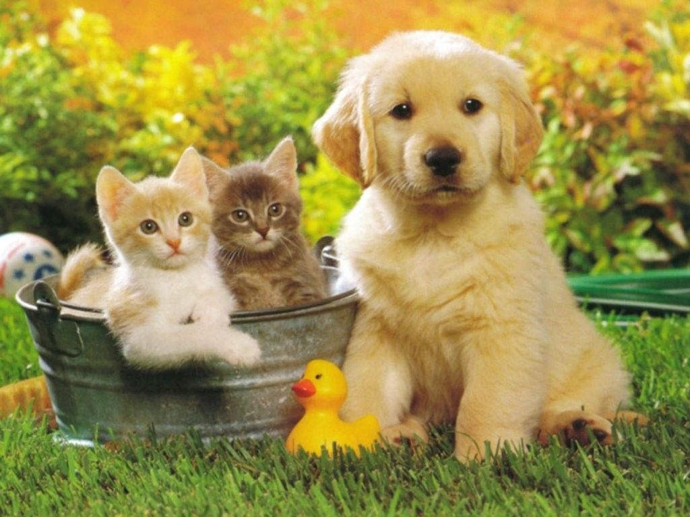
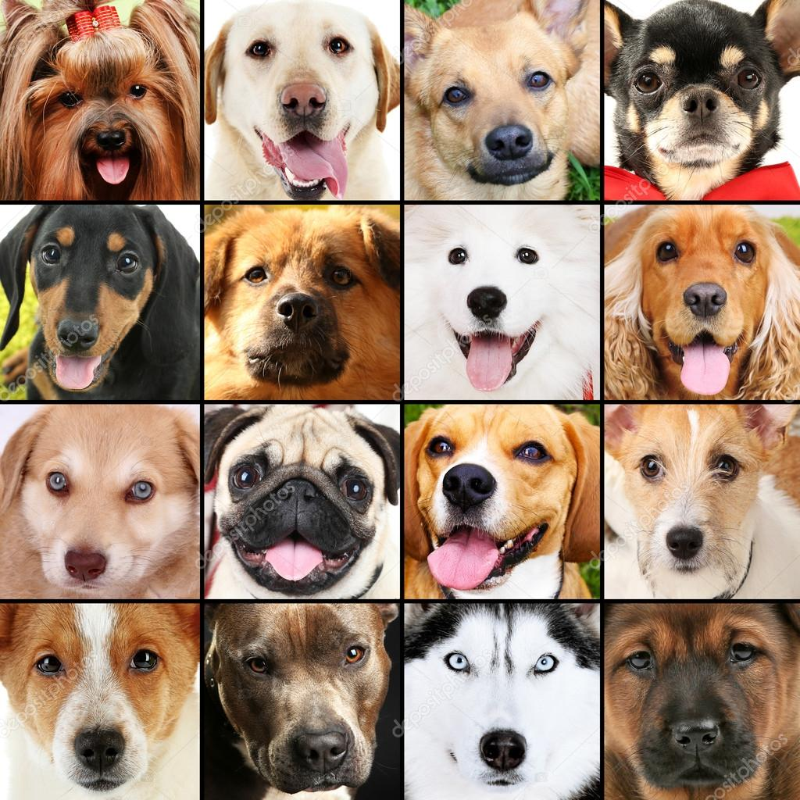
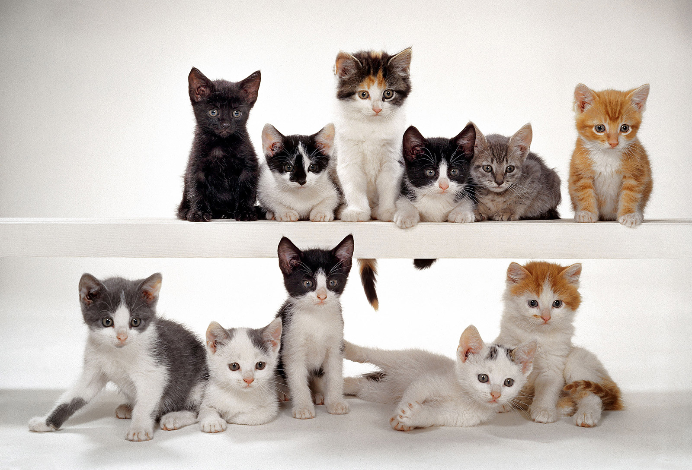

Perros
El perro (Canis lupus familiaris),1 llamado perro doméstico o can, y en algunos lugares coloquialmente llamado chucho, tuso, choco, entre otros; es un mamífero carnívoro de la familia de los cánidos, que constituye una subespecie del lobo (Canis lupus). En 2013, una población mundial estimada de perros estaba entre 700 millones y 987 millones. Su tamaño (o talla), su forma y pelaje es muy diverso según la raza. Posee un oído y olfato muy desarrollados, siendo este último su principal órgano sensorial. Su longevidad media es de 10 a 13 años, dependiendo de la raza.
El perro doméstico proviene de un ancestro o grupo ancestral común que data de hace aproximadamente treinta mil años y desde entonces se ha extendido a todas partes del mundo. Los primeros restos fósiles de perros enterrados junto con humanos fueron encontrados en Israel y datan de hace unos doce mil años. Desde entonces, los perros y los humanos han evolucionado conjuntamente, tanto en las culturas africanas y euroasiáticas, como en las que poblaron América y se mantuvieron sin contacto con aquellas hasta el siglo XV. Los perros comparten el entorno, los hábitos y el estilo de vida humanos, como las dietas ricas en cereales y almidón. La alimentación inadecuada, así como el uso de antibióticos, son la causa del desarrollo de muchas enfermedades inflamatorias e inmunológicas. Unas cuatrocientas enfermedades del perro tienen una equivalente humana, destacando especialmente la enfermedad de Alzheimer y otros trastornos neurológicos, así como cánceres, enfermedades autoinmunes y enfermedades cardiovasculares.
Tienen una gran relación con los humanos, entre tales relaciones se incluyen fungir como animales de compañía, animales de guardia, perros de trabajo, perros de caza, perros de agua, galgos de carrera, perros guía, perros pastores o perros boyeros.
Gatos
El gato doméstico (Felis silvestris catus), llamado popularmente gato, y de forma coloquial minino, michino, michi, micho, mizo, miz, morroño o morrongo, entre otros nombres, es un mamífero carnívoro de la familia Felidae. Es una subespecie domesticada por la convivencia con el ser humano. El nombre actual en muchas lenguas proviene del latín vulgar catus. Paradójicamente, catus aludía a los gatos salvajes, mientras que los gatos domésticos, en latín, eran llamados felis.
Como resultado de mutaciones genéticas, cruzamiento y selección artificial, hay numerosas razas. Algunas, como la raza Sphynx o la Peterbald están desprovistas de pelo; otras carecen de cola, como los gatos de la raza Manx, y algunas tienen coloraciones atípicas, como los llamados gatos azules.
El gato se comunica a través de vocalizaciones. Las más populares son su característico maullido y el ronroneo, pero puede aullar, gemir, gruñir y bufar. Además, adopta poses o expresiones que informan, a sus congéneres, sus enemigos o sus cuidadores, de su ánimo o sus intenciones. Junto con el perro, es el animal doméstico más popular, como mascota, como ayuda en la lucha contra roedores o ambas cosas.
Por su amplio abanico de presas potenciales, por su alta eficiencia como depredador, y por su elevado éxito reproductivo –especialmente si se suministra artificialmente alimento a las colonias sin tomar medidas adicionales para limitar su fertilidad– el gato doméstico está incluido en la lista 100 de las especies exóticas invasoras más dañinas del mundo de la Unión Internacional para la Conservación de la Naturaleza.